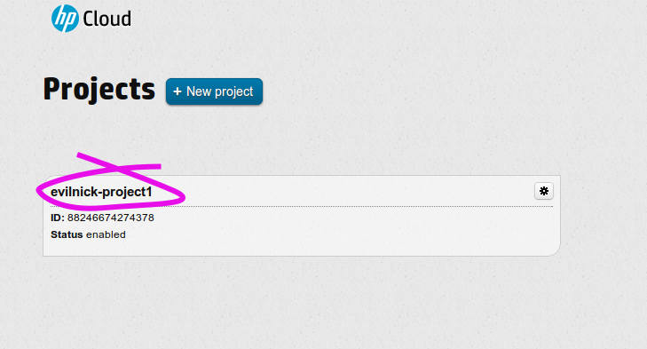
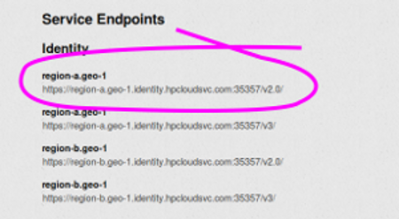
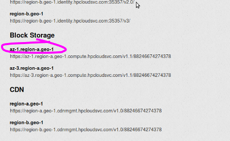

You should start by generating a generic configuration file for Juju, using the command:
juju generate-config
This will generate a file, environments.yaml , which will live in your ~/.juju/ directory (and will create the directory if it doesn’t already exist).
Note
If you have an existing configuration, you can use ``juju
generate-config –show`` to output the new config file, then copy and paste relevant areas in a text editor etc.
The essential configuration sections for HPCloud look like this:
hpcloud:
type: openstack
use-floating-ip: false
admin-secret: 139e8bee94d15bff96d91ab9c27e5efc
# Globally unique swift bucket name
control-bucket: juju-9b53d6f5f45968d7c392a221f85fc8ae
auth-url: https://region-a.geo-1.identity.hpcloudsvc.com:35357/v2.0/
public-bucket-url: https://region-a.geo-1.objects.hpcloudsvc.com/v1/60502529753910
auth-mode: userpass
username: [your username]
password: [password]
tenant-name: [HP Cloud Project Name]
region: [az-1.region-a.geo-1, az-2.region-a.geo-1, or az-3.region-a.geo-1]
The items highlighted are values you will need to enter, and are explained below. You will find most of the relevant information on the `HP Cloud API Keys page`_
tenant-name: For HPCloud, this is listed as the project name on the `”Manage Projects” page`_.
You will find the following information on the `HP Cloud API Keys page for your account`_.
auth-url: This is the keystone url for authentication. It is given (on a region by region basis) under the heading “Service Endpoints - identity”
region: This is the longer format region name, given under the headings for Block Storage and Compute sections.
username: Enter your HP Cloud login username.
password: Enter your HP Cloud login password.
public-bucket-url: Currently up to date tools are provided to HP Cloud by a public bucket. If you’re using your own imagemetadata you’d change this URL to the bucket you’ve created.